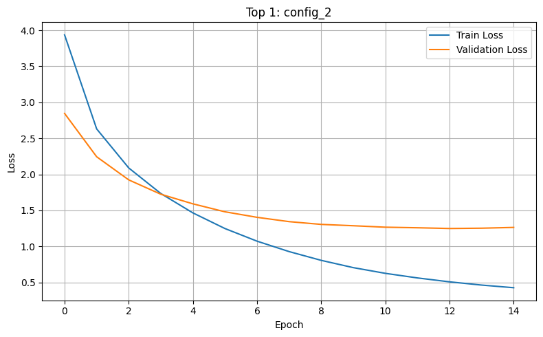
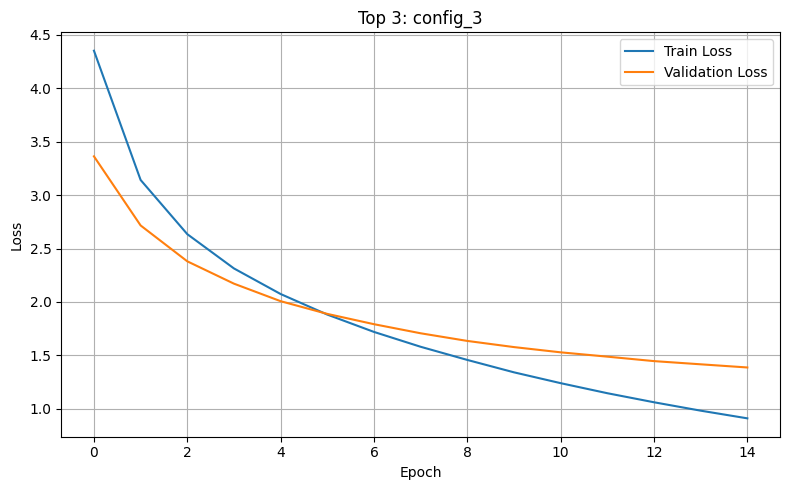
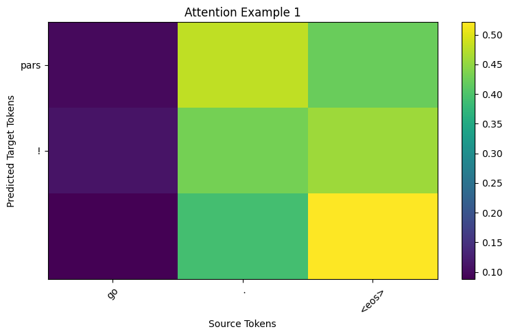
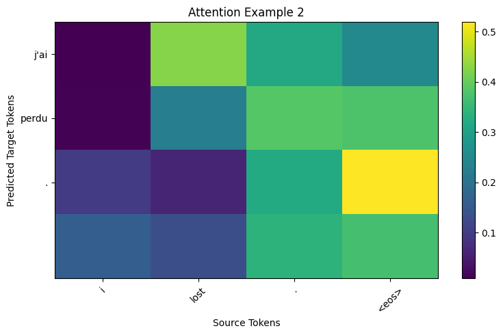
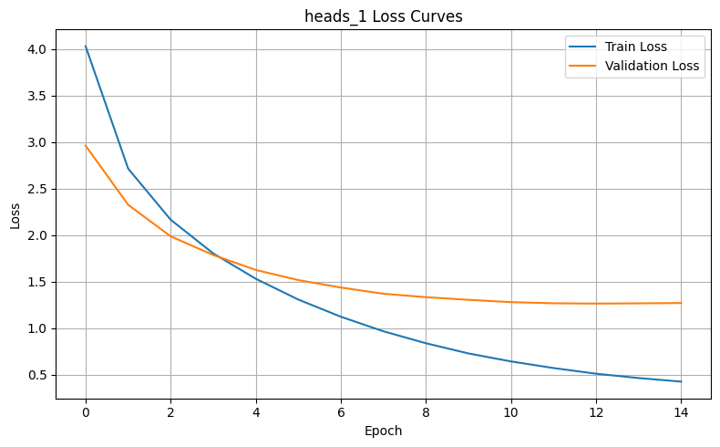
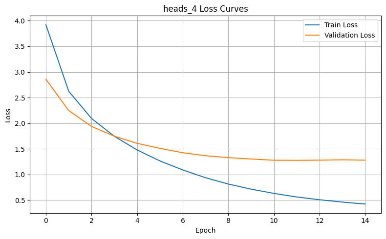
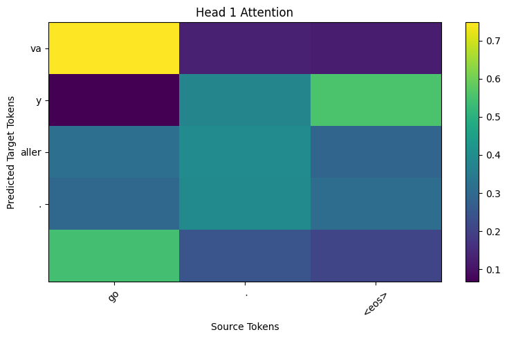
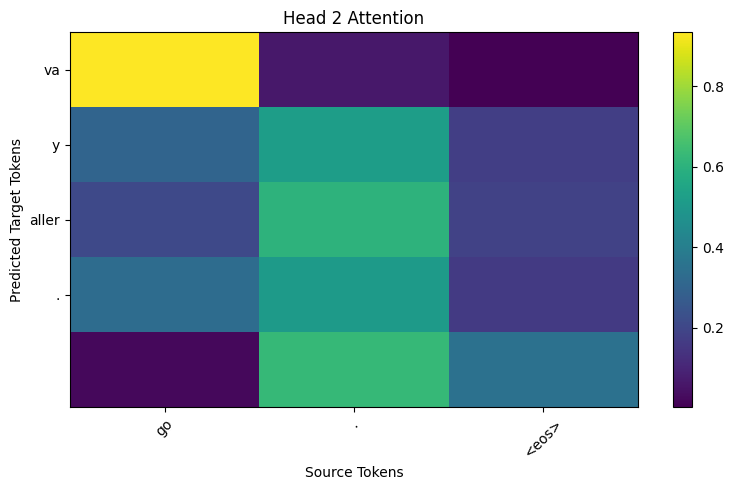

This report presents my work for Project 3, focused on attention-based neural machine translation using the English–French dataset.
As an undergraduate student, I completed Part 1 (basic attention) and Part 2 (multi-head attention).
Overview
The goal of this project was to explore attention-based sequence-to-sequence models for machine translation.
In Part 1, I implemented a GRU-based encoder-decoder model with additive attention.
In Part 2, I replaced the single-head attention mechanism with multi-head attention and compared different head counts.
For evaluation, I used the provided English–French sentence pairs as a fixed held-out test set.
These sentence pairs were removed from the main dataset before splitting the rest into training and validation sets.
BLEU scores reported below were computed on that same fixed test set for consistency.
Part 1: Basic Attention Mechanism
Approach
I implemented a Seq2Seq translation model with a GRU encoder, a GRU decoder, and additive attention.
At each decoder step, the decoder computes attention over the encoder outputs, forms a context vector, and combines that context with the current token embedding to predict the next French token.
Hyperparameter Tuning
I compared several configurations by varying embedding size, hidden size, dropout, and learning rate.
I used training loss, validation loss, and BLEU score to compare the configurations.
Config
Embed Size
Hidden Size
Dropout
Learning Rate
BLEU
config_1
128
128
0.1
0.001
0.3845
config_2
256
256
0.2
0.001
0.4876
config_3
256
256
0.3
0.0005
0.3746
config_4
128
256
0.2
0.001
0.3648

Figure 1. Training and validation loss for one of the best-performing Part 1 configurations.
Figure 2. Training and validation loss for another strong Part 1 configuration.

Figure 3. Training and validation loss for a third top-performing Part 1 configuration.
Discussion
The tuning experiments show that model performance depends on a balance between capacity and regularization.
Larger hidden and embedding sizes can improve representation quality, but they do not automatically guarantee better BLEU scores.
Dropout helps control overfitting, while the learning rate affects both convergence speed and stability.
Because the provided test set is small, I treat BLEU mainly as a relative comparison metric rather than a large-scale benchmark.
Attention Visualization
I also visualized the attention weights for selected sentence pairs.
These heatmaps help show which source words the decoder focuses on when generating each target word.

Figure 4. Attention heatmap for a translated sentence pair from Part 1.

Figure 5. Attention heatmap for another translated sentence pair from Part 1.
In simpler examples, the attention maps are more concentrated and align more clearly with corresponding source words.
In harder examples, the attention becomes more diffuse, which often corresponds to less certain or less accurate translations.
Part 2: Multi-Head Attention
Approach
In Part 2, I kept the same GRU-based encoder-decoder framework but replaced the single-head attention mechanism with multi-head attention.
This allows the decoder to compute several attention distributions in parallel and combine them before predicting the next token.
Head Count Experiments
I compared models with 1, 2, 4, and 8 attention heads.
The goal was to test whether increasing the number of heads improved translation quality or simply added extra complexity.
Model
Heads
BLEU
heads_1
1
0.4356
heads_2
2
0.4479
heads_4
4
0.4525
heads_8
8
0.3830

Figure 6. Training and validation loss for the 1-head model.

Figure 7. Training and validation loss for the 4-head model.
Discussion
Multi-head attention can improve flexibility by allowing different heads to capture different alignment patterns.
However, more heads do not always produce better results.
When the hidden size is fixed, increasing the number of heads reduces the dimensionality available to each head, so there can be a point where added complexity stops helping.
Per-Head Attention Analysis
To better understand how the heads behave, I visualized attention separately for each head on selected sentence pairs.

Figure 8. Per-head attention visualization for one example.

Figure 9. Another head from the same example, showing a different attention pattern.
Some heads show more direct and concentrated alignment behavior, while others are broader or partially redundant.
This suggests that the usefulness of multi-head attention depends not only on the number of heads, but also on whether the heads actually learn different and complementary patterns.
Comparison Between Part 1 and Part 2
Comparing the best basic-attention model with the best multi-head model helps show whether the added complexity of multi-head attention produced a practical improvement.
If the best multi-head model achieves stronger BLEU or more interpretable attention behavior, that supports the idea that multiple heads are learning useful complementary patterns.
If the gains are small, that suggests the additional complexity may not be fully necessary for this dataset and setup.
Approach
Best Configuration
BLEU
Seq2Seq + Additive Attention
CONFIG 2
0.4876
Seq2Seq + Multi-Head Attention
HEADS_4
0.4525
Conclusion
This project explored two attention-based sequence-to-sequence translation models on the English–French dataset.
Part 1 showed how additive attention helps the decoder focus on relevant source words while generating translations.
Part 2 extended that idea with multi-head attention and compared different numbers of heads.
Overall, the experiments show that attention improves interpretability and can improve translation quality, but the best architecture depends on the balance between model capacity, regularization, and optimization behavior.
The visualizations were especially useful for understanding not just whether a model performed well, but how it used the source sentence during translation.